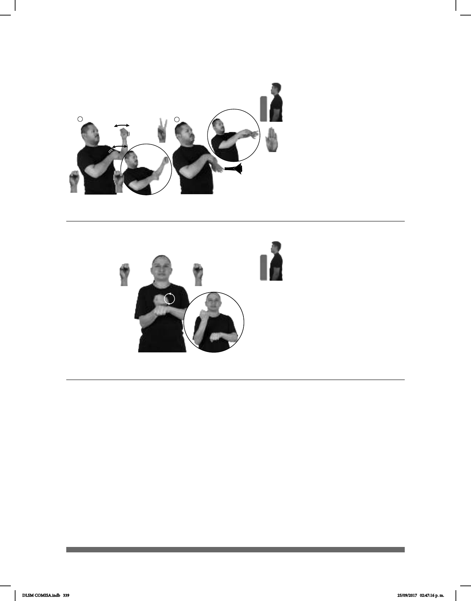

339
Seña: SC
I S.1, II 2.1, B-P.6
I. MD Palma hacia la
izquierda, MB Palma hacia la derecha; II.
MD Palma hacia abajo. MB Palma hacia la
izquierda.
A la altura del pecho.
Recto hacia adentro
repetidamente, II. De izquierda a derecha
formando un arco.
Cuerpo hacia atrás y
hacia la izquierda.
sust. m. También conocido
como surf de vela es una modalidad de
deporte de vela que consiste en desplazarse
en el agua sobre una tabla de surf adiciona-
da con una vela para ser impulsada por el
viento.
1
2
(S-136)
Windsurf
WINDSURF NECESITAR VIENTO MAR CL: B/CL:2
de pie con base
El windsurf necesita del aire para deslizarse.
Seña: SB
MD y MBS.1
MD palma hacia arriba.
MB palma hacia abajo.
A la altura del pecho del lado
izquierdo.
MD recto sobre el antebra-
zo de MB repetidamente.
sust. m. Prenda de vestir que
cubre total o parcialmente el pie
generalmente de piel, aunque puede ser de
tela, estambre o plástico; frecuentemente tiene,
en la parte inferior, una suela de
material más duro y resistente que prote-
ge la planta del pie.
(S-137)
PAYASO ZAPATO pos-SUYO COLOR AMARILLO
Los zapatos del payaso son amarillos.
DLSM COMISA.indb 339 25/09/2017 02:47:16 p. m.